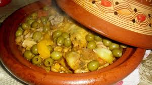

Recept Tajin

Ingredienten
Kip of lamsvlees (500 g tot 1 kg)
Olijven (100 g, groene olijven)
Uien (2 grote, fijngesneden)
Knoflook (3-4 teentjes, fijngehakt)
Citroen (1 ingelegde citroen en schijfjes voor garnering)
Verse koriander (gehakt)
Verse peterselie (gehakt)
Olijfolie (2-3 eetlepels)
Bereiding
- Verwarm de tajine (of een grote pan) op middelhoog vuur en voeg de olijfolie toe.
- Voeg de gesnipperde uien en gehakte knoflook toe. Bak deze totdat ze zacht en goudbruin zijn.
- Voeg de stukken kip of lamsvlees toe en bak ze aan alle kanten goudbruin.
- Doe de kurkuma, gemberpoeder, komijnpoeder, paprikapoeder, peper, en zout erbij. Meng alles goed, zodat het vlees de kruiden opneemt.
- Voeg de ingelegde citroen (in stukken gesneden) en een beetje water toe, samen met de saffraan (geweekt in warm water). Roer goed door.
- Dek de tajine af en laat het geheel op laag vuur 45 minuten tot 1 uur sudderen. Voeg indien nodig wat water toe, zodat de saus niet uitdroogt.
- Voeg de olijven en gehakte koriander en peterselie toe, ongeveer 15 minuten voor het einde van de kooktijd.
- Optioneel: Voeg de aardappelen en wortels toe en laat ze samen met het vlees gaar worden.
- Controleer of het vlees gaar is en de saus ingedikt. Garneer met schijfjes citroen.
- Serveer de tajine met vers brood of couscous.